Interaction-Aligned Robot Learning from Human Videos with Structured Graph Modeling
NeurIPS 2026
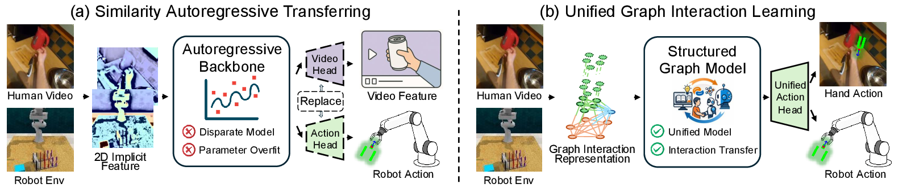
Abstract
Recent advances in robotics foundation models have shown promising multi-task generalization, yet their reliance on specialized embodiment-specific data and model fundamentally prevents them from exploiting the far richer physical interaction knowledge present in abundant human manipulation videos. Existing approaches that leverage human videos suffer from misaligned representations that preclude explicit unified interaction modeling over human video and robot demonstration, failing to capture unified physical interaction dynamics essential for cross-domain transfer.
We address this by constructing a unified representation that aligns human videos and robot tasks through scene point clouds with hand-to-gripper mapping via spatial tracking and hand pose estimation. Leveraging this representation, we propose a structured graph transformer that explicitly models spatial, semantic, and intentional interaction entities through graph attention mechanisms. The modeled multi-level interaction features then enable interaction-aligned cross-domain learning, transferring manipulation knowledge from human videos to robot tasks via discrete interaction abstraction and hierarchical distribution alignment.
Experiments on RLBench, ManiSkill2, and real-world robot demonstrate state-of-the-art performance on diverse benchmarks with fewer demonstrations and effectiveness of our designed modules. Remarkably, our method achieves zero-shot transfer on robot tasks when trained exclusively on human video, providing strong evidence for effective human-to-robot transfer through interaction alignment.
Method
The method aligns human videos and robot demonstrations through scene point clouds and hand-to-gripper mapping. A structured graph transformer models spatial, semantic, and intentional interactions through graph attention.
The Interaction Abstraction Module learns discrete interaction primitives during pre-training on human videos. During fine-tuning on robot demonstrations, a hierarchical alignment loss aligns continuous interaction embeddings and discrete primitive usage across the two domains.
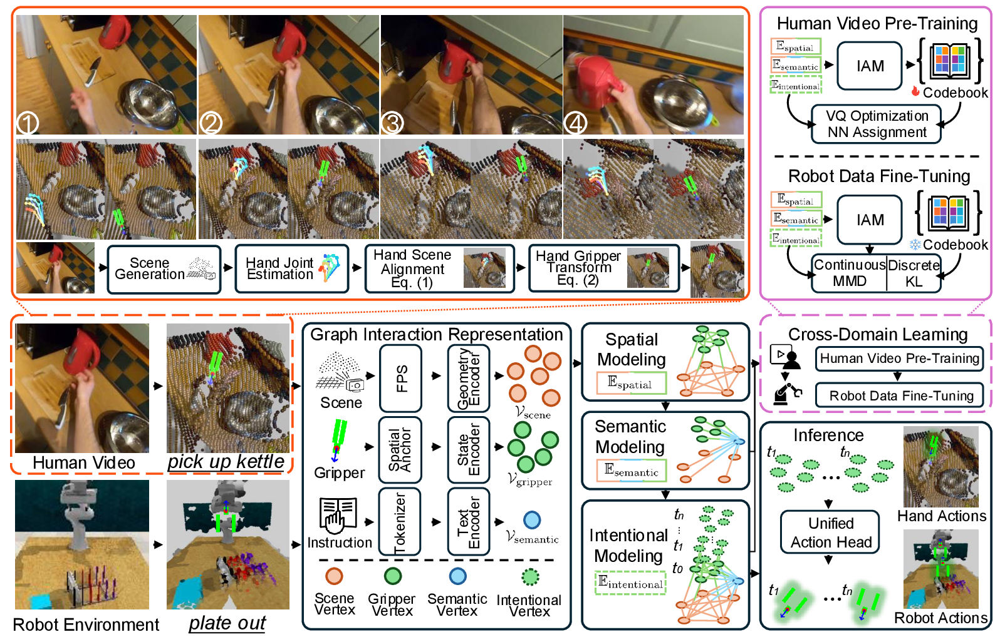
Experiments
Multi-Task Benchmark Comparison
The same model is evaluated on 19 RLBench tasks and 10 ManiSkill2 tasks.
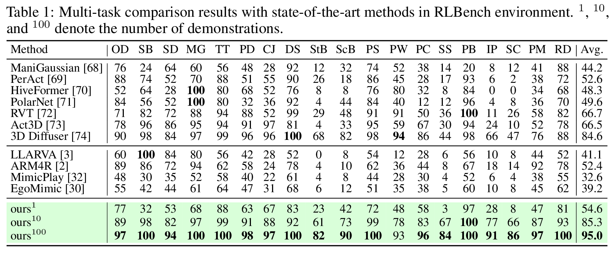
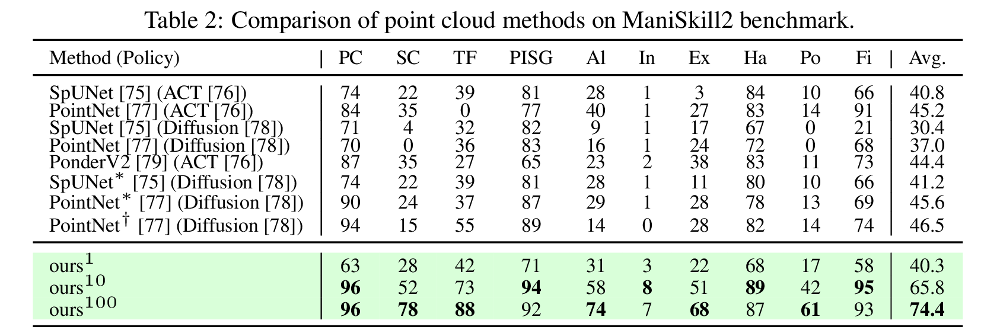
Model and Training Analysis
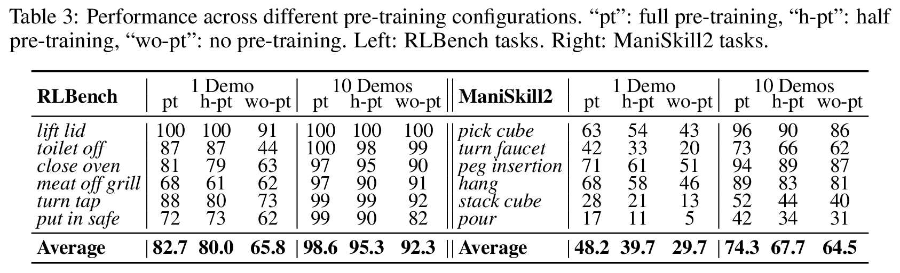
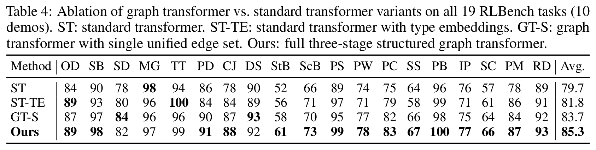
Appendix
Hand-as-Gripper Mapping Sensitivity
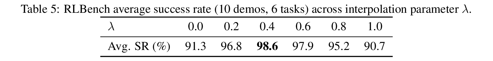
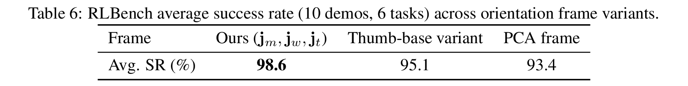
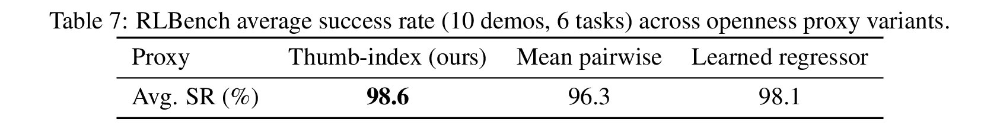
Benchmark Results with Standard Deviation Error
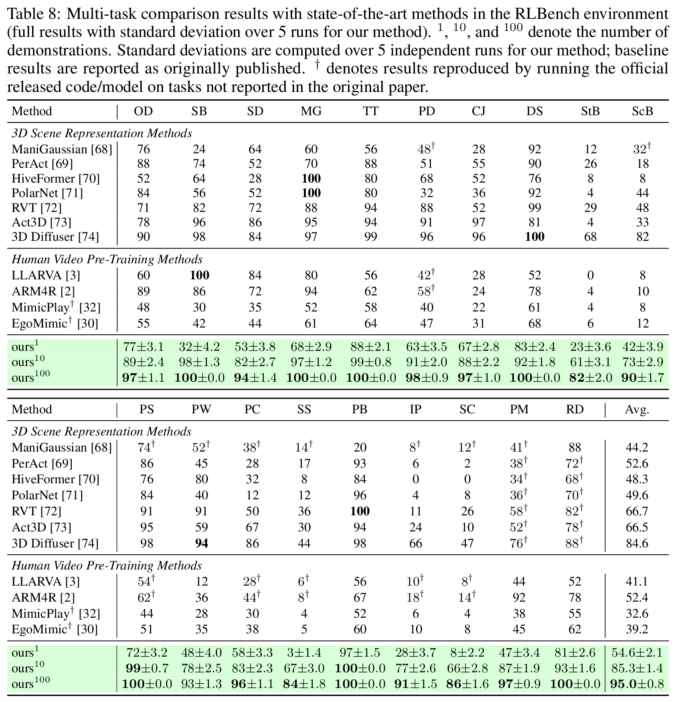
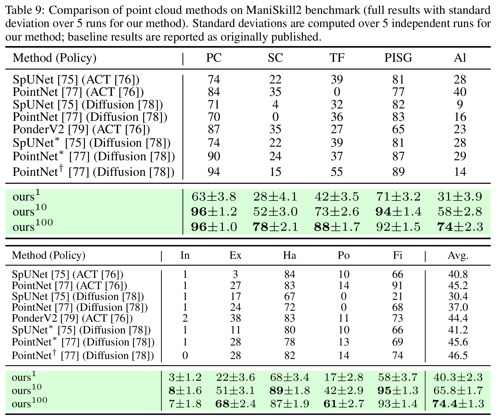
Cross-Domain Learning Success Rate Analysis
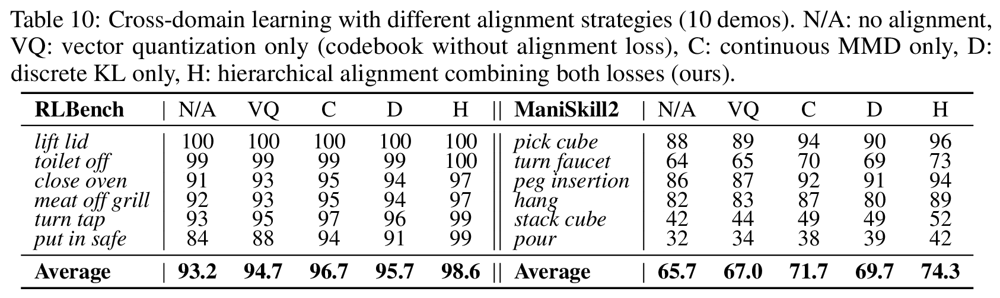
Zero-Shot Protocol
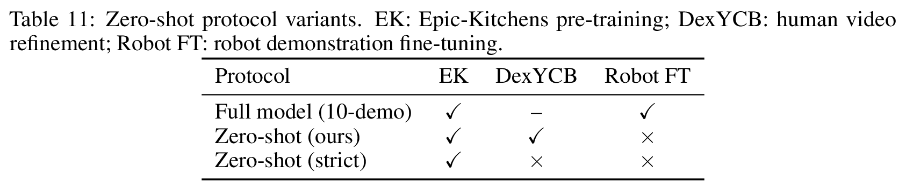